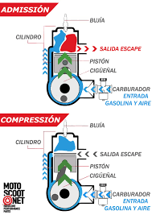

El motor de dos tiempos, también denominado motor de ciclos, es un motor de combustión interna que realiza las cuatro etapas del ciclo termodinámico pero no tiene válvulas para realizar las diferentes etapas (admisión, compresión, combustión y escape) en dos movimientos lineales del pistón (una vuelta del cigüeñal), lo realiza mediante cortes en las paredes de los cilindros denominada comúnmente como lumbreras
Un motor de cuatro tiempos es un motor de combustión interna alternativo tanto de ciclo Otto como ciclo del diésel, que precisa cuatro carreras del pistón o émbolo (dos vueltas completas, pero del cigüeñal) para completar el ciclo termodinámico de combustión. Estos cuatro tiempos son: admisión, compresión, combustión o explosión o expansión y escape.
El motor eléctrico es un dispositivo que convierte la energía eléctrica en energía mecánica de rotación por medio de la acción de los campos magnéticos generados en sus bobinas. Son máquinas eléctricas rotatorias compuestas por un estator y un rotor.